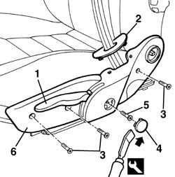
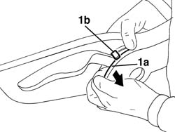
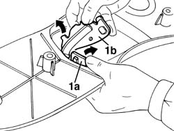
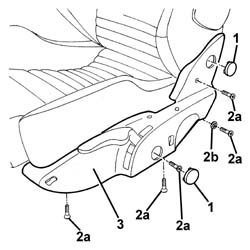
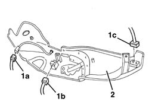
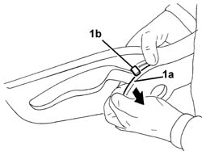
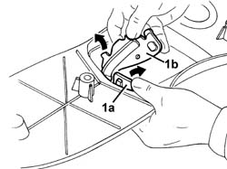

7045a43 seat exterior guard - r r
- Path
- Procedures > 70 FITTINGS > 7045 FRONT SEATS > 7045A front seat assembly > 7045a43 seat exterior guard - r r
- Kind
- repair procedure (removal / refitting; the operation number is the code)
- Applies to
- all engines; all production periods
- Interactive page
- https://sloeber94.github.io/elrnDB-a156/en/#/3238872
Applies to: all engines; all production periods
 Removing
Removing
 Refitting
Refitting1. Operate the height adjustment device and raise the seat.
2. Release the seat belt trim.
3. Unscrew the bolts
4. Remove the embellishment using the approriate tool.
 | Name | Country |
|---|---|---|
4 | Scraper blade | 1.823.014.000 |
5. Undo the bolt fixing the height adjustment lever.
6. Remove the outer guard complete with lever.

Applies to: all engines; all production periods
If necessary, separate the lever from the guard proceeding as follows.
1. Gently force the side panel (1a) and release the trim guide (1b).

Applies to: all engines; all production periods
1. Working from the inside, separate the trim (1a) from the lever (1b).

Applies to: all engines; all production periods
Refitting
RemovingCheck that the guard and the lever are not damaged.
If separated, refit the lever on the guard.
Place the guard, complete with lever, in position.
Tighten the lever fixing bolt.
Fit the trim.
Tighten the screws.
Fit the seat belt trim.
Operate the adjustment lever and place the seat in the correct position.
Applies to: engines: 3.2 V6; all production periods; only with equipment: GTA
Removing
Refitting7045A10 l/h or r/h front seat (one) - r+r
1. Release the trims working from the inside.
2. Undo the bolts (2a) and keep the spacer (2b) positioned inside the guard.
3. Move the outer guard complete with lever slightly.

Applies to: engines: 3.2 V6; all production periods; only with equipment: GTA
1. Disconnect the electrical connections for the heater pad LED (1a), the heater pad switch (1b) and the backrest movement switch (1c).
2. Keep the outer guard complete with lever.

Applies to: engines: 3.2 V6; all production periods; only with equipment: GTA
If necessary, separate the lever from the guard as follows.
1. Gently force the side panel (1a) and release the guide (1b) from the trim.

Applies to: engines: 3.2 V6; all production periods; only with equipment: GTA
1. Working from the inside of the guard, separate the trim (1a) from the lever (1b).

Applies to: engines: 3.2 V6; all production periods; only with equipment: GTA
Refitting
RemovingCheck that the outer guard and the lever are not damaged.
If separated, refit the lever on the guard.
Connect the electrical connection.
Place the guard in position complete with lever.
Position the spacer and secure the shield using the bolts.
Fit the embellishments.
Topics linked from this page (2)
Topics that link to this page (30)
- O05 FRONT SEAT HEIGHT ADJUSTMENT NOT WORKING
- S65 SEATS CREAKING
- 5580C44 front side bag module one lh or rh r r
- 5580C86 side bag wiring harness (one) lh or rh - r r or replace
- 5580C92 connecting lead in seat for side air bag module r r
- 7045A14 Front seat CUSHION ASSEMBLY (one), left or right - R.R.
- 7045A18 FRONT SEAT BACKREST ASSEMBLY (ONE), LEFT OR RIGHT - R.R.
- 7045A19 BACKREST - CENTRE SECTION - front seat (one, left or right - R.R .
- 7045a36 drivers seat manual height adjustment device - r r
- 7045a38 device for driver`s seat squab lumbar adjustment - r r with seat removed
- 7045A39 device for driver`s seat squab lumbar adjustment - r r
- 7045A62 joints of driver`s side front seat lift device - r r with seat disconnected
- 7045A72 front seat mount/guide - passenger`s side r r with seat removed
- 7045A73 front seat mount/guide - passenger`s side r r
- 7045A80 front seat cushion squab (outer) joint assembly - r r with seat removed
- 7045A82 front seat cushion/squab (interior) joint assembly - r r with seat removed
- 7045A85 Front seat BACKREST COVER, left or right - R.R.
- 7045A86 (One), front SEAT FRAME left or right - R.R.
- 7045A87 Front seat CUSHION COVER, left or right - R.R .
- 7045A88 Front seat BACKREST UPHOLSTERY, left or right - R.R. with seat removed
- 7045A89 Front seat BACKREST UPHOLSTERY, left or right - R.R .
- 7045A90 Front seat CUSHION UPHOLSTERY, left or right - R.R. with seat removed
- 7045A91 Front seat, CUSHION UPHOLSTERY left or right - R.R.
- 7045A98 front seat rear pouch panel, lh or rh - r r
- 7045D24 Front seat CUSHION ASSEMBLY COVER (one), left or right - R.R.
- 7045J34 front seat squab rake motor, l/h or r/h - r+r following electrical wiring check
- 7045J60 Front seat BACKREST ANGLE control switch, left or right - R.R. for check
- 7045M22 l/h or r/h front seat cushion heat pad - r+r following electrical wiring check
- 7045M26 l/h or r/h front seat squab heat pad - r+r following electrical wiring check
- 7045M30 LED signalling front seat HEATING, left or right - R.R.